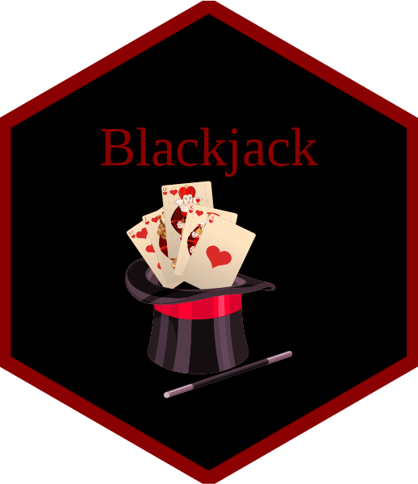

Blackjack


Welcome to the World of Blackjack
Blackjack is a classic card game in which the objective is to achieve a hand total closer to 21 than the dealer’s without exceeding it. Each player begins with two cards and may choose to “hit” to draw additional cards or “stand” to keep their current hand. Number cards retain their face value, face cards are worth 10, and Aces count as either 1 or 11. If a hand exceeds 21, it results in a bust and the player loses. The dealer must draw until reaching at least 17. A starting hand with an Ace and a 10-value card is called a blackjack and typically earns a bonus.
blackjack Package Overview
The blackjack package offers an interactive environment for simulating the Blackjack card game in R. Designed with flexibility in mind, it supports both user-controlled gameplay and automated strategies, enabling solo or multiplayer sessions. The package captures realistic game dynamics—such as dealer logic, card flow and scoring, making it suitable for simulating strategies and analysing probabilistic outcomes.
Installation
To install the development version of the blackjack package, run the following commands in R:
install.packages("devtools")
devtools::install_github("MonashARP/game-package-bilbies")If the repository is private or you prefer a local setup, you can clone it using Git. First, run git clone to download the repository to your computer. Then, in R, set your working directory to the cloned folder and install the package with:
install.packages("devtools")
devtools::install()Function Overview
| Function | Description |
|---|---|
auto_player_turn() |
Auto-play logic for player decisions |
card_is_face() |
Check if card is J, Q, or K |
card_name() |
Get card as a string, e.g. “J♠” |
card_rank() |
Get card rank (e.g., “Jack”, “10”) |
card_suit() |
Get full name of suit (e.g., “Heart”) |
card_symbol() |
Get suit symbol (e.g., “♠”) |
card_value() |
Get card’s numeric value for scoring |
create_shuffled_deck() |
Create and shuffle full deck(s) |
deal_hand() |
Deal cards from the deck |
dealer_turn_smart() |
Dealer draws with soft-17 logic |
dealer_turn() |
Dealer draws until reaching 17+ |
play_blackjack_multi() |
Run multiplayer Blackjack game |
play_blackjack() |
Play one round of Blackjack |
player_turn() |
Player drawing logic with input |
simulation_blackjack() |
Simulate many rounds for strategy testing |
Example
Here are some basic examples which show you how to use the package.
🏎️ Quick Start
Start by creating a shuffled deck and deal a hand of cards. The example below shows how to generate a standard 52-card deck, draw two cards, and inspect both the hand and the remaining deck.
# Make sure to load the package!
library(blackjack)
# Creates a full standard deck of 52 cards
deck <- create_shuffled_deck()
# Simulate drawing cards from the top of a deck
hand_result <- deal_hand(deck, n = 2)
# `hand_result` returns result of both card dealt and remaining deck
hand_result$hand
hand_result$deck 🏁 Game On!
This is a basic example that shows how to use the package to play a full round of Blackjack. The game prompts you for input during play, allowing you to hit, stand, double down, split, or quit depending on your balance. It also supports several players, each taking their turn against the dealer using the standard Blackjack rules.
# Specify the initial bet and the number of decks to use
play_blackjack(bet = 100, n_decks = 4)
# Test strategy across multiple players
play_blackjack_multi(num_players = 3, bet = 50)For simulations and automated strategy testing, you can let the computer make decisions using the auto_player_turn() function. It chooses whether to hit or stand based on the value of the current hand.
auto_player_turn(hand = c("8♦", "4♠"), deck = create_shuffled_deck())♠️ The Cards
You can use the following functions to inspect different properties (name, rank, symbol, value and whether it’s a face card) of your card. These functions make it easy to inspect, sort, or filter cards when building game logic or debugging the game.
deck <- create_shuffled_deck()
card <- deck[1]
card_name(card)
card_rank(card)
card_symbol(card)
card_is_face(card)
card_value(card) Learn More
To explore the full functionality of the blackjack package, you can view the documentation for each function directly in R by typing ?
Team Contributions
Game Package Part1
- Andy Tran: Team leader, built functions and extension to single and multiple players (WIP)
- Rong Xu: Implemented core functions, Built unit tests (WIP)
- Yiran Yao: Supported in building functions and unit tests; Vignette and readme drafts; Modified roxygen comments.
Game Package Part2
- Andy Tran: Built main
vctrlogic and functions;vctrrelated unit test, documentation and design vignette.
- Rong Xu: Rendered function examples; Built unit tests; Ensured S3 method consistency; Resolved R CMD check issues; Participated in building vctrs record class.
- Yiran Yao: C++ programming for
deal_hand(); Refinement for introduction vignette and readme; Debugging errors during checks.
License
This package is licensed under the GNU General Public License v3.0 or later.
See the LICENSE file for details.